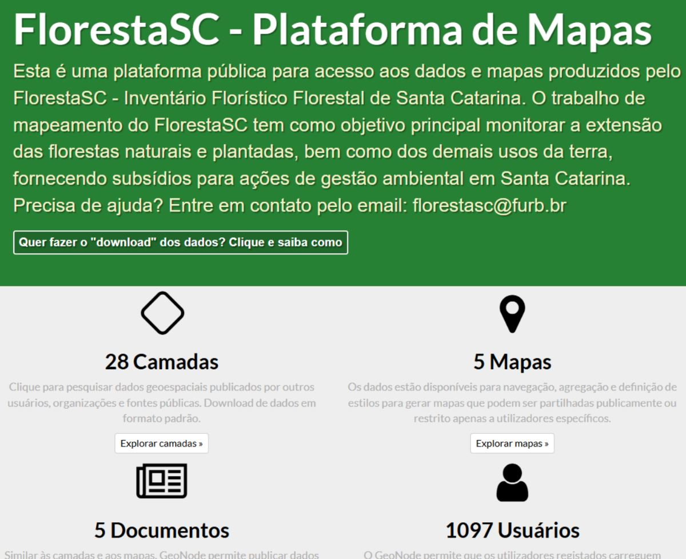
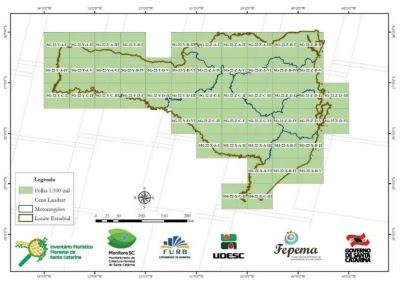
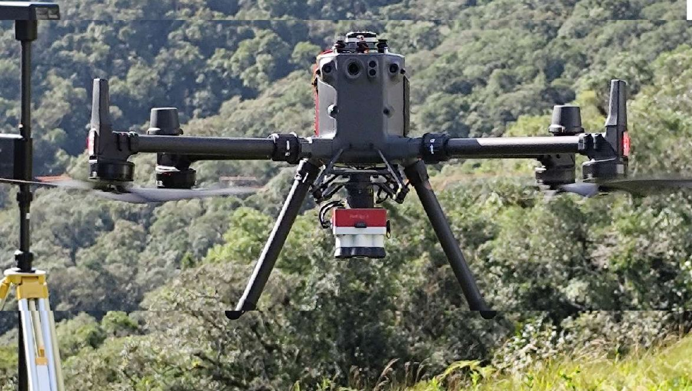
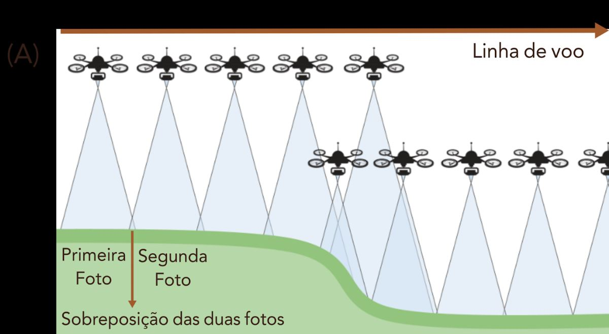
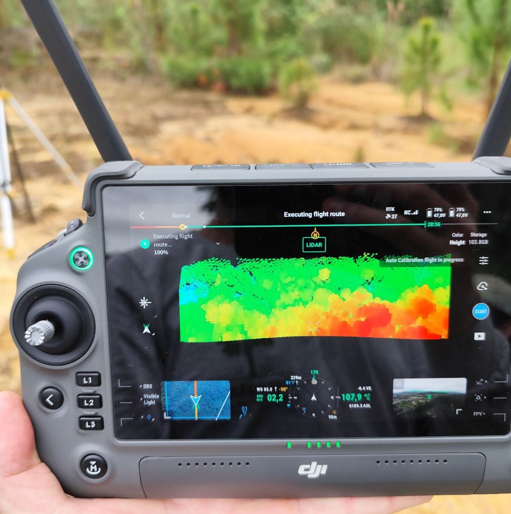

Translated from the Portuguese original. Publication titles, citations and names are kept in their original language.
Mapping
Lead institution:
Regional University of Blumenau (FURB)
Coordinator:
Prof. Dr. Alexander Christian Vibrans
Aim:
To monitor the extent of native forests and other land uses in Santa Catarina with remote sensing, to identify their dynamics and develop products and services useful for management.
Mapping is one of FlorestaSC's lines of work. It complements field data with products based on remote sensing (RS). The RS data come from various sensors on Earth-observation satellites, which continuously provide images of the Earth's surface, making it possible, for example, to observe changes in forest cover and in farmland and pasture, or to monitor urbanisation over time.
The products will be used for land-use planning and environmental enforcement/licensing at local (municipal), regional and state level, supporting the work of the public agencies involved.
Note: this mapping work was formerly part of the MonitoraSC subproject within the Forest and Floristic Inventory of Santa Catarina. After the project's identity was redesigned, mapping became one of the lines of work of the project now called FlorestaSC.
The specific objectives of the mapping work are:
- To strengthen synergies between the forest inventory and mapping, combining field observations with RS data;
- To define standard methods for detecting and quantifying changes in forest cover, allowing a steady workflow;
- To quantify forest resources through maps based on statistical modelling;
- To provide the relevant agencies with continuously updated thematic maps of land cover and land use;
- To improve methods for understanding the interactions between vegetation change and remote sensing data.
Why is our work needed if forest maps already exist?
Managers and decision-makers need up-to-date, reliable information to develop strategies for land-use planning and environmental licensing and control. We therefore seek to understand the limitations of new maps, reporting product quality and improving the available land cover and land use information.
Land cover and land use information can only be obtained when the field data team and the remote sensing team interact and work together. That is exactly what the mapping work within FlorestaSC does.
Our mapping is innovative...
...because no similar maps have:
1) A new legend of multiple land uses (12 thematic classes);
2) Wide spatial coverage;
3) A scale and level of detail suitable for municipal use;
4) Consistent, transparent methods with fully documented, open code.

FIQUE POR DENTRO
To learn more about our mapping work, see also:
Methods
FlorestaSC
florestasc@furb.br 47 3221-6100
Maps
Available maps:
➤ Shapefile downloads: request by e-mail at florestasc@furb.br or register on our Map Platform (Map platform)
Forest Cover and Land Use Map of Santa Catarina (MonitoraSC, 2020)

See the online map and the methods
➤ Shapefile/raster download: register on the Map Platform or request at florestasc@furb.br (Map platform)
Read the paper: MonitoraSC: um novo mapa de cobertura florestal e uso da terra do estado de Santa Catarina
How to cite
Vibrans, A.C.; Nicoletti, A.L.; Liesenberg, V. et al. MonitoraSC: um novo mapa de cobertura florestal e uso da terra do estado de Santa Catarina. Agropecuária Catarinense, v. 34, p. 42-48, 2021.
Map of potential areas and remnants of restinga in Santa Catarina

➤ Shapefile download: register on the Map Platform or request at florestasc@furb.br (Map platform)
Read the paper: Mapeamento das Áreas Potenciais (originais) e Remanescentes de Restinga: uma proposta metodológica para Santa Catarina, Brasil
Nicoletti, A.N.; Vibrans, A.C.; Andrade, M.Y.; da Veiga, J.L.; Bizon, A.R.; da Silva, M.S.; Lingner, D.V.; Farias, T.L. Mapeamento das Áreas Potenciais (originais) e Remanescentes de Restinga: uma proposta metodológica para Santa Catarina, Brasil Revista Brasileira de Geografia Física, v. 17, n. 1, p. 260-280, 2024.
Maps of threatened species of Santa Catarina

Map of priority areas for the conservation of key Atlantic Forest families
More information in Oliveira et al. (2021)
Oliveira, L.Z.; Gasper, A.L.; Vibrans, A.C. Potential new areas for conservation of key botanical families in the subtropical Atlantic Forest. Biodiverisity and Conservation, v. 30, p. 3903-3917, 2021.
This part of the page uses an interactive Google Sites feature that could not be copied. See it on the current site ↗
Priority areas for the conservation of key Atlantic Forest families – Fabaceae/Myrtaceae/Lauraceae, according to Oliveira et al. (2021)
Abstract: The plant families Myrtaceae (guamirins), Lauraceae (laurels) and Fabaceae (legumes) are essential floristic elements of the Atlantic Forest because of their remarkable species richness, levels of endemism and ecological roles. FlorestaSC data were analysed to check whether there are areas with conservation potential and high richness of tree/shrub species of these families. Local univariate Moran statistics were applied to the species richness of these families per sample plot. Six clusters of plots were found in the Dense Ombrophilous Forest (FOD) and the Mixed Ombrophilous Forest (FOM); most hold more than half of all species of these families observed by FlorestaSC, plus many from other families. One Myrtaceae cluster and one Lauraceae cluster in the FOD were the only ones overlapping protected areas. Lauraceae clusters in the FOM, in ecotone zones with the FOD, had ∼50% native forest cover, while the Myrtaceae and Fabaceae clusters had ∼10%.
Location map of FlorestaSC sample plots

Click here for the detailed location map of the sample plots
Information on each sample plot is available here.
Maps in shapefile format
The FlorestaSC Map Platform (https://monitora.furb.br/) has more than 20 layers for the state of Santa Catarina in shapefile format.
Most of these layers can be downloaded after registering. Learn how to register on the map platform with this step-by-step guide.
Shapefiles can also be requested by e-mail at florestasc@furb.br.

Some of the layers on the platform were produced by FlorestaSC:
- Forest Cover and Land Use Map of Santa Catarina (shapefile and raster)
- Map of potential areas and remnants of restinga in Santa Catarina (shapefile)
The platform also provides layers produced by other agencies, such as municipalities (Seplan, 2013), river basins (SDM) and phytoecological regions (Klein, 1978), among others.
See the full list of layers on the Map Platform.
Maps in .jpg format
Click here for more information on the maps below.
FlorestaSC
florestasc@furb.br 47 3221-6100
Mapping 2017–2020
Read the methods of the mapping carried out between 2017 and 2020:
➤ Shapefile downloads: request by e-mail at florestasc@furb.br or register on our Map Platform (Map platform)
Methods for forest cover and land use mapping
Data
The project used Landsat-8 OLI satellite images (2017), digital elevation models (from SDS and NASA – SRTM) and the aerial photogrammetric survey of Santa Catarina (Santa Catarina, 2012), among other products. Satellite images were obtained from USGS (https://earthexplorer.usgs.gov/) as Level 2 products with geometric, radiometric and atmospheric surface reflectance corrections.
Ancillary data on topography (altitude, slope and exposure to radiation) and climate (mainly rainfall and temperature) were used to improve the classification of land cover and land use types.
FlorestaSC field data are a valuable source of information on forest resources and their spatial patterns. They were used to obtain consistent reference information ('ground truth') to train and validate the automated classification algorithms for the satellite images.

Procedures
The methods rely on three main categories of products: RS products, ancillary products and field information.
The procedures, shown in the flowchart below, were carried out independently for each of the 42 map sheets of Santa Catarina, to account for local and regional particularities.

The satellite images were classified with the Random Forest algorithm, producing a map with 12 thematic classes, a minimum mapping unit of 0.5 ha and an overall accuracy of 95%.
FLUXOGRAMA


Methods for restinga mapping
Two restinga maps were produced:
1) Potential restinga areas – areas potentially (or originally) occupied by different restinga formations;
2) Remaining restinga areas – current restinga remnants within the potential areas.
Potential restinga areas
Potential areas were defined by overlaying five attributes: altimetry (NASA – SRTM v.3), accumulation model (IBGE, 2004, 2009), soil classification (EMBRAPA, 2004), relief (CPRM, 2016) and hydrogeological subdomain (CPRM, 2007). They were classed into three levels of probability of restinga occurrence: very high, high and transitional, based on the most likely features of each attribute in restinga areas and the information in each polygon resulting from the intersection of the five attributes.
Remaining restinga areas
Restinga remnants were mapped with the same procedures used for the other land-use classes, following the flowchart above. The Random Forest algorithm was trained and then validated with ground-truth samples of the various restinga sub-formations identified in high-resolution images (Santa Catarina, 2012; Google Earth), in on-site photos from the FlorestaSC collection and in Google Street View. A single thematic class, 'Restinga', was mapped.

FlorestaSC
florestasc@furb.br 47 3221-6100
Drone surveys
Drones bring speed and scalability to combining forest inventory and remote sensing data. FlorestaSC uses drones with multispectral and LiDAR sensors to complement field data and enable broader, more accurate analyses of vegetation structure.
Study area
Drone flights are made over FlorestaSC sample plots, where the forest inventory is also carried out. Between June and December 2024, 40 plots were flown: 20 in the Mixed Ombrophilous Forest (FOM) and 20 in the Dense Ombrophilous Forest (FOD). The FOM plots are concentrated on the Northern Plateau, and the FOD plots between the North Coast and Greater Florianópolis. (Forest inventory)

Equipment
Flights used a DJI Matrice 350 RTK drone with the following equipment:
- a multispectral camera, producing orthomosaics with a mean spatial resolution of 4 cm in five bands (RGB, red edge and near-infrared);
- a LiDAR (laser) sensor, producing a dense 3D point cloud with up to five returns;
- a differential RTK GNSS receiver, correcting the flight path in real time with a positional accuracy of up to 10 cm;
- a SatLab FR-20 differential GNSS receiver, accurately recording the start and end coordinates of each subplot of a sample plot.
Data collection
Before fieldwork, two drone flight plans are prepared for each plot, one per sensor (LiDAR and multispectral). Each plan sets parameters such as speed and flight height. Data quality depends on these parameters and on those adjusted in real time during the flight, such as ISO (image brightness) and shutter speed (to avoid blur from drone movement).

Drone used to capture images over FlorestaSC plots
Once the plot is located in the field, two tasks are carried out: drone flights and recording the start and end coordinates of each subplot. Data are collected in favourable weather – no rain or fog.
Before the flight, the RTK receiver is set up in an open area. The drone is then flown while the RTK receiver corrects its path in real time. The flight is monitored from the drone's remote controller.
Two flights are made per plot:
(A) with a multispectral sensor, to capture multiple aerial images;
(B) with a LiDAR (laser) sensor, to obtain 3D point clouds by emitting light pulses.

Flight line (multispectral). Each drone symbol marks where an image is taken. Grey lines show the ground area covered by each image.

The LiDAR sensor emits light pulses and records a return signal from each object they hit (e.g. leaf, branch, trunk or forest floor).
After the flight, the team enters the forest remnant where the plot is located to record the start and end coordinates of each subplot (20 × 50 m; see the sample plot layout). The start and end of each subplot are marked by metal rods buried during the forest inventory, found with a metal detector. Two receivers are used: the RTK receiver ('base'), set up outside the forest to track satellite signals and send corrections to the other receiver ('rover'), used inside the forest. The rover is mounted on an 8 m telescopic pole to reach higher and improve satellite reception.

Location of the metal rod placed during the forest inventory (at the start and end of each subplot), used to record coordinates with high-precision GPS.

Drone operation team

Setting up the RTK and drone in the field

Rover receiver inside the forest, mounted on an 8 m pole

Monitoring the drone flight from the remote controller
Workflow
The stages are listed below and shown in the flowchart.
- Stage 1: flight planning – analysis and selection of plots to fly over, flight settings in the app and field logistics;
- Stage 2: data collection by drone flights with the LiDAR sensor and multispectral camera;
- Stage 3: pre-processing of the data in each instrument's software (LiDAR: DJI Terra; multispectral: Agisoft Metashape);
- Stage 4: the pre-processed products are processed in R to compute and select metrics that predict forest attributes;
- Finally, the selected metrics are used as predictors in models of forest attributes.

Products
Drone images yield a range of information on forest characteristics. Below are some of the products FlorestaSC has obtained with drones:

Forest profile from the LiDAR sensor. The point cloud allows assessment of the canopy and the height of individual trees.
Aerial drone photo, the raw material for identifying tree species with artificial intelligence.
Orthophoto used to extract predictive metrics of forest attributes (e.g. NDVI and NDRE).
Result of machine-learning algorithms classifying points as ground, understorey, trunks, branches and leaves.
Digital Surface Model (shown) and Digital Terrain Model.
Canopy Height Model.
FINANCIAMENTO:
FlorestaSC
florestasc@furb.br 47 3221-6100
Mapping publications
Publications and conference papers from FlorestaSC's mapping work are listed in this section.
Papers
- Silva, D.A.; Vibrans, A.C.; Bollmann, G.; Nicoletti, A.N.; Lingner, D.V. Filling the gap between pasture and forests: classifying initial-stage forests in the subtropics using satellite data. Journal of Applied Remote Sensing, v. 19(3), 2025. https://doi.org/10.1117/1.JRS.19.034502 [DOWNLOAD]
- Nicoletti, A.N.; Vibrans, A.C.; Andrade, M.Y.; da Veiga, J.L.; Bizon, A.R.; da Silva, M.S.; Lingner, D.V.; Farias, T.L. Mapeamento das Áreas Potenciais (originais) e Remanescentes de Restinga: uma proposta metodológica para Santa Catarina, Brasil. Revista Brasileira de Geografia Fisica, v. 17, n. 1, p. 260-280, 2024. https://doi.org/10.26848/rbgf.v17.1.p260-280
- Vibrans, A.C.; Nicoletti, A.L.; Liesenberg, V. et al. MonitoraSC: um novo mapa de cobertura florestal e uso da terra do estado de Santa Catarina. Agropecuária Catarinense, v. 34, p. 42-48, 2021. https://doi.org/10.52945/rac.v34i2.1086
- Vibrans, A.C.; McRoberts, R.E.; Moser, P.; Nicoletti, A. Using satellite image-based maps and ground inventory data to estimate the area of the remaining Atlantic forest in the Brazilian state of Santa Catarina. Remote Sensing of Environment, v. 130. p. 87-95. https://doi.org/10.1016/j.rse.2012.10.023
Papers presented at the Brazilian Remote Sensing Symposium (SBSR) and SELPER
XXI SBSR (2025) - Salvador (BA)
- Avaliação de preditores potenciais para detecção da perda de cobertura florestal. (Adilson Nicoletti) Leia – Texto
- A precisão de geolocalização de unidades amostrais pode afetar a estimativa de índices espectrais em dados de altíssima resolução coletados com drones? (Daniel Silva) Leia – Texto e Painel (Poster)
- Melhoria da acurácia e da estabilidade temporal da reflectância toa do sensor ETM+/Landsat-7 (Jonathan Müller) Leia – Texto
XXI Simpósio Internacional SELPER (2024) - Belém (PA)
- Potencial de utilização de ARPS para estimativas ecológicas em unidades amostrais do Inventário Florestal Nacional. (Daniel Silva) Leia – Texto e Apresentação (Presentation)
XX SBSR (2023) - Florianópolis (SC)
- Mapeamento da cobertura florestal de Santa Catarina (Alexander Vibrans) Leia – Texto e Painel (Poster)
- Classificação das formações da Restinga Catarinense com uso do algoritmo Random Forest (Adilson Nicoletti) Leia – Texto e Painel (Poster)
- Fragmentação florestal diminui a área foliar em florestas nativas (Daniel Silva) Leia – Texto e Painel (Poster)
- Backdating of invariant pixels: comparison of algorithms for land use and land cover change (LUCC) detection in the subtropical brazilian atlantic forest. (Murilo Schramm) Leia – Texto e Painel (Poster)
XIX SBSR (2019) - Santos (SP)
- Effects of topographic correction on natural forest reflectance in a mountainous region of southern Brazil. In: XIX Simpósio Brasileiro de Sensoriamento Remoto, 2019, Santos. Anais do XIX Simpósio Brasileiro de Sensoriamento Remoto. São José dos Campos: INPE, 2019. v. 17. p. 1-4.
XVIII SBSR (2017) - Santos (SP)
- Intercomparison between forest cover mapping for two areas in Santa Catarina (Brazil): Leia – Texto e Painel (Poster)
- Perspectives on remote sensing monitoring applied to forest inventory and land cover mapping for management purposes in Santa Catarina (Brazil): Leia – Texto e Painel (Poster)
FlorestaSC
florestasc@furb.br 47 3221-6100
Page migrated from floresta.sc.gov.br.